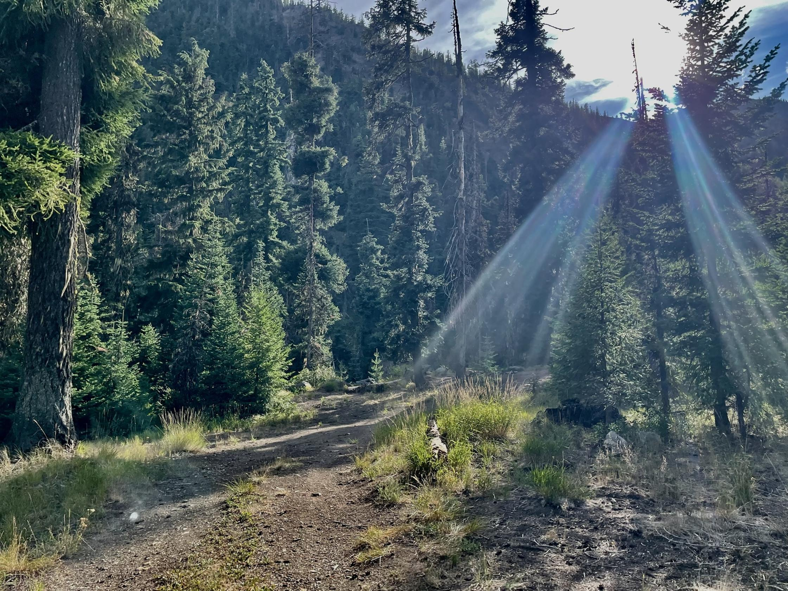
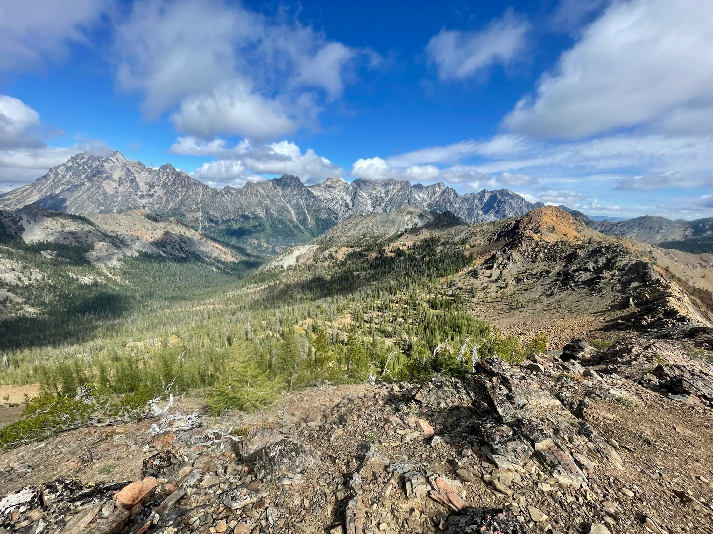
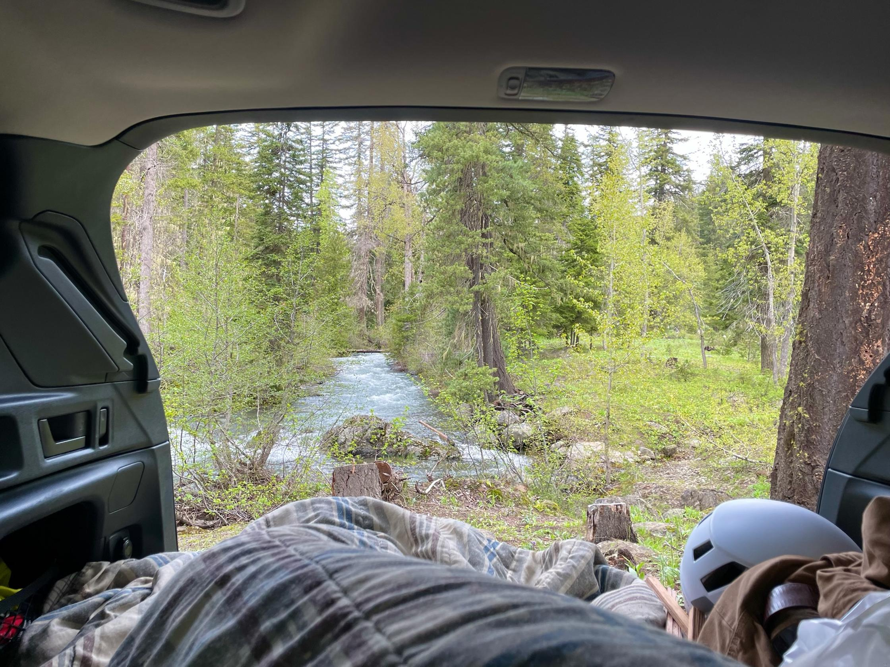
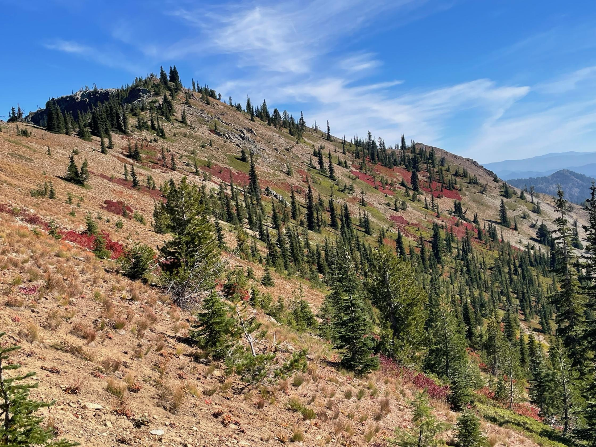
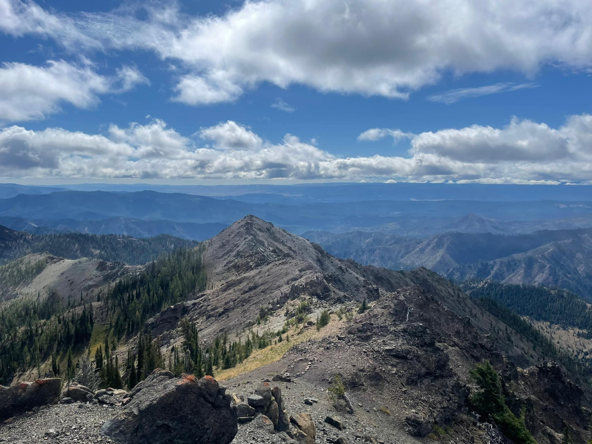
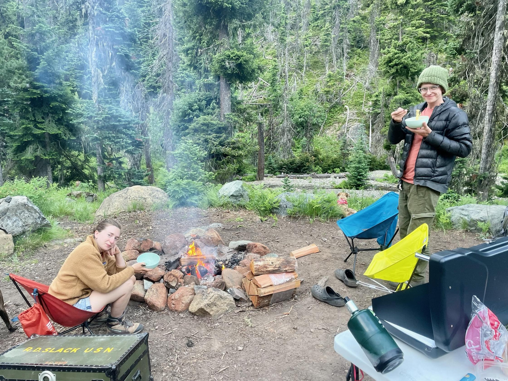
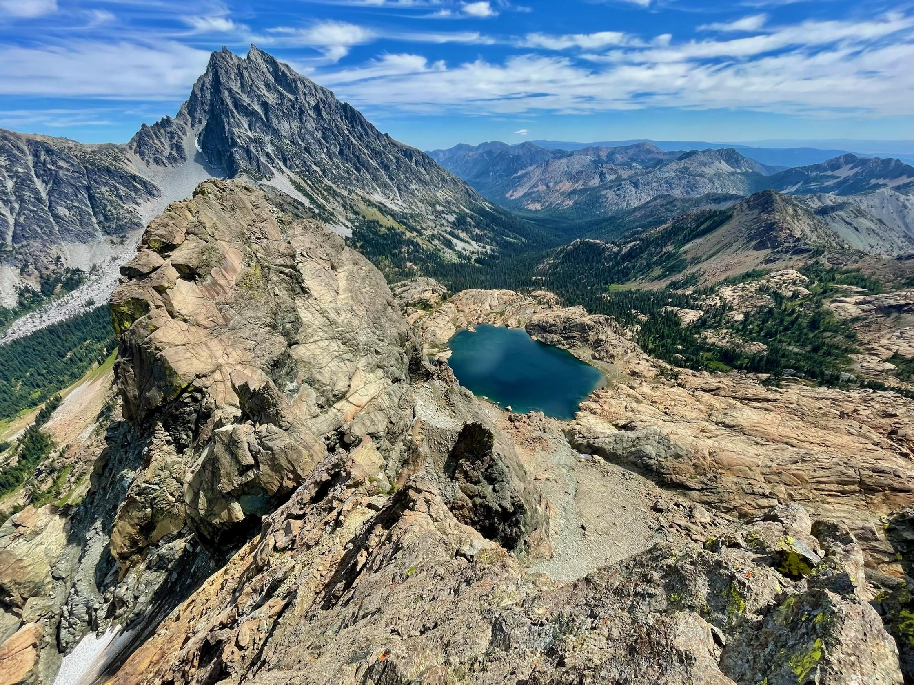
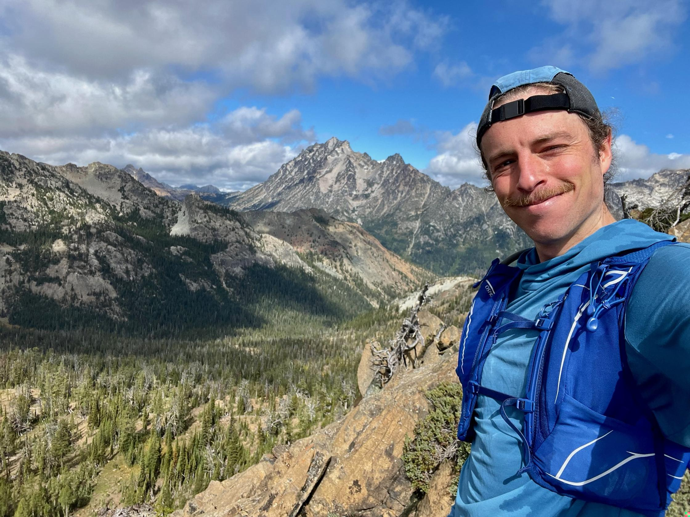

To the Teanaways
January 22, 2026

I've got a place in the mountains east of town that I think of as my own. It's not mine in any legal sense. But it's a place that I've returned to over the years and that, when I'm away, I return to in my mind. When I'm there, I feel settled. Like all the time elapsed since the last time I was there was time on the road and only upon returning had I come home.
The mountains there aren't as striking as the peaks in neighboring ranges. They are not terrible, but soft and broad shouldered. They are content to let more conspicuous peaks take the brunt of foul weather blown in from the sea, so the wind arrives there broken, the clouds spent.
Less weather begets less greenery. The trunks of the ponderosa pines that cover these hills are licked black by fire. The grassy undergrowth fills in but does not obscure the space between the trees, and where the trees have fallen their blanched bones decorate idyllic fields.
When I climbed these mountains, it was no heroic conquest, no struggle against treachery like they write about in books. These mountains have always been welcoming. Climb up my hunching back, they say. Scramble up my solid stones. Follow them to my summits and look long down my gentle valleys, like sighting a rifle on those taller mountains that still have something to prove.

When I first came to the Teanaways four springs ago with The Mountaineers, it was my first trip with the club. A tame scramble to the top of Iron Peak. We hiked from the dry trailhead near the De Roux Horse Campground into the higher elevations that still carried feet of snow. We practiced kicking steps along the ridge above Eldorado Pass, made the summit easily, and glissaded back down.
What I remember best from that day is breakfast. I'd driven out alone the night before and taken a dispersed campsite a mile down the road from the trailhead. In the morning, I woke up early so I had time to make coffee. I heated water on my stove, poured it over my instant grounds. I chunked up an apple and mixed it into oatmeal. I took extra care to find a perfect spot for my camp chair: a knoll over the river with just enough flat space and a view down a straight section between bends.
I sat for a quiet meal, not more than ten minutes long. But it was a slow break from the rush to prepare for the day. I felt anxious about meeting relative strangers for the hike. But to be alone and delighted by the hot sips and the sounds of the river was to diminish the anxiety's significance.
Later, Lyle, the trip leader, told us that in the summertime he and his wife often spent full weekends at the De Roux Campground. They'd hike all day, then park chairs in the middle of the river, uncork a bottle of wine and let the evening pass slowly like the cold water over their feet. I thought that sounded like a nice way to live.

The Teanaways are the broad region around the Teanaway Community Forest, 50,241 acres of state-owned land in central Washington, purchased from a private timber company in 2013. They're east of the Cascade crest, 65 miles from Seattle as the crow flies, but close to three hours by car. The main access point is a gravel road, graded annually, often dusty, that follows the North Fork Teanaway River to the Esmeralda trailhead.
The forest serves many styles of outdoor recreation; like most public lands east of the crest, hikers and campers share with dirt bikers and hunters. The most popular trails access Bean Creek basin and Lake Ingalls, both popular backpacking destinations, especially in the fall during larch season. They feature stunning views of Mt. Stuart and the Enchantments peaks, all more storied in Washington outdoors lore and in height than the Teanaway peaks. The southern flank of those granite hulks rises four thousand feet from Ingalls Creek on the Teanaway's northern border. If a person wants to camp on the other side of that wall, they must win a permit in a lottery.

But the Teanaways aren't so exclusive. And their treasures are more conspicuous. They have been, in their recent history, home to a pack of grey wolves, including 32M, a so-called patriarch of Washington wolves. Born in the Methow Valley, he sired and led the Teanaway Pack for ten years until his death in 2020.
I never saw 32M or his family, who migrated out of the region sometime in the last few years. I've never heard them spoken of in conversations with my climbing friends. But I do feel something bordering on kinship with them, a recognition of their excellent taste in home. A place to be quiet and unperceived.
Maybe 32M appreciated that, outside of larch season at least, a fella can always find space in the Teanways. Along the road to De Roux are a hundred informal campsites, some big enough for a single car, others suitable for a family reunion. No reservation or fee required. I've never been there without seeing cars. But I've also never had trouble finding a spot away from people.

My favorite campsite, which I found on my third trip, is along a turnoff where the main road crosses a small drainage off Iron Peak. In consecutive years toward the end of summer, my two best friends and their dog joined me there. The site sits under a thick pine and atop a twenty foot hill above the riverbed. There, the creek off Iron splits into smaller rivulets, sometimes only a foot wide and an inch deep, dividing a gravel bar on their way to the river. The river itself, especially in late summer, would hardly be called a creek in grander locales. But here, it's plenty. It creates just enough sound and motion to entertain in the absence of cell service.
In my memory, my friend makes a fire in the pit on top of the hill. We toss sticks down to the gravel bar for the dog to fetch and we watch as she splashes through the water, dashes around camp, and leaps over downed logs. When the sun goes down and the stars come out, on my way to bed in the back of my Subaru, I think about how glad I am to have this.

A home is not a home without some sense of possession. All people are entitled to a place that is theirs to be left alone, safe from judgment or bother. The promise of respite from the unceasing motion of life. Their room, four walls inside a house or without walls in the forest or even somewhere secret within the noggin. For a home to be a home, a person must never forced to share it with anybody.
But I do share the Teanaways with others. They're public lands. Even my special campsite, when I'm gone, is used by others. I know this with certainty because I've picked up the trash other occupants left in the fire ring.
And yet, I have some sense of possession for this place. It's somehow my discovery, a gem that I polished. I am proud of it, I am protective of it.
When I climbed Ingalls Peak last summer, I brought friends to my spot and it felt like inviting them into my apartment. I showed them the path down the hill and through the bushes to the river. I apologized for a tree that'd fallen over the driveway, swearing that it wasn't usually there. Following guests' etiquette, when we left for our climb in the morning, they assured me that it was a lovely campsite.

It doesn't matter that the place is not mine. The remembered feelings matter and it matters that I can return there, where those memories were born, and I can have those feelings there again.
Are the memories home? I return to them when I am far away from the Teanaways, sitting at my dining room table in Seattle and feeling out of place. I think about a solo trip in September 2024 when I traversed the serpentine ridge between Bean and Mary's Peaks. I was having simple fun, I felt strong and competent, and I thought the rocks were just beautiful. That feels like me, or the me that I want to be.

The place is not home without the past. But a home is not a home unless you can return to it today. The memories don't suffice without the place.
Four years ago on another solo trip, I left De Roux Trail #1392 and beelined toward the southwest slope of Esmeralda Peak. For two hours, I churned loose earth and pushed through brambles on my way uphill, breathing hard but steady. I climbed over a rocky ridge to the summit then took a seat on a ledge for lunch. Chewing a salami sandwich, kicking my feet over the edge, I watched a kayaker float around an alpine lake two thousand feet below. Then I climbed back down, rejoined the trail, and ran the switchbacks giddy, like a sweaty Fred Astaire.
Driving home, before the forest road turned paved and split from the river, I made one more stop because I didn't feel ready to leave yet. I walked down to the river and the rocks on its bank, made a neat pile of my shoes and socks, then shirt, pants, and underwear. I waded into a knee deep eddy, then crouched into the water. Its dull coolness washed over my hips, then my shoulders. I climbed onto a wide slab where the pinetops parted and the sun baked the rocks. There, as the rock radiated the sun's heat back into me, I was still. I was by myself but sure I was a part of this world. And though time moved like the emerald stream passing by me, it seemed to flow from an unending source, and that I might lie there and watch it pass forever.